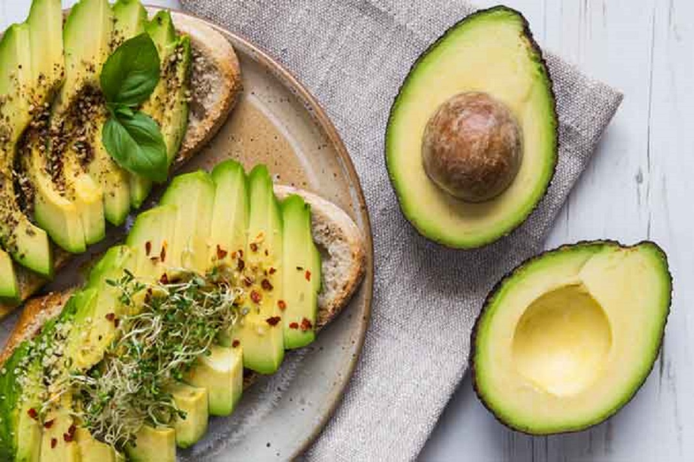

La palta para el mundo:

Para unos es conocido como el oro verde por sus muchos aportes, tanto para la salud, como para la belleza, no por nada sus mascarillas siguen vigentes
Es considerado como una fruta, sin embargo, la gran diferencia con el resto de estos alimentos es que en realidad al momento de probarlo no es dulce al paladar, por ello, suele utilizarse en una gran variedad de platillos salados.
La doctora Laura Juárez Navarrete, presidenta de la Fundación Mexicana para la Dermatología, y la nutrióloga Ana María Tello, nos enumeran sus principales beneficios.
Propiedades nutricionales
-
Contiene ácidos grasos omega-3, potasio, fosfolípidos, azúcares naturales, y mucha vitamina D y E.
-
Es rico en luteína, que tiene elementos antimicrobianos y antiinflamatorios.
-
Su aporte en carbohidratos, proteínas y bajo en sodio son una buena fuente de energía.
-
La semilla del aguacate concentra más antioxidantes que otras partes de esta fruta, según un estudio en la Universidad Nacional de Singapore.
A tu salud
-
Reduce el colesterol ‘malo’ (HDL) porque ayuda a limpiar la sangre, debido a su grasa monoinsaturada, que es un aceite de origen vegetal.
-
Protege la salud del corazón, ya que su aceite tiene la capacidad de modificar los ácidos grasos en los tejidos que rodean este órgano.
-
Su composición es similar al aceite de oliva, por lo que se le han atribuido propiedades anticancerígenas, debido a que combate los daños causados por los radicales libres.
En tu belleza.
- Las vitaminas D y E ayudan a hidratar la piel y darle los nutrientes suficientes para la producción de queratina, encargada, entre otras cosas, del fortalecimiento de cabello y uñas.
- Se ha visto que aplicarlo directamente en la piel no causa sensibilización o dermatitis, pues son aceites naturales que van a proporcionar humectación y lubricación.
- Es una buena opción para después de una quemadura solar, cuando la piel está irritada, porque actúa como una pomada con emolientes o lanolina que restaura el epitelio. Puede mezclarse con aceite de almendras para que la fórmula puede lubricar bien, tal como lo haría cualquier crema humectante, indica la dermatóloga Luisa.
La mejor forma de consumirlo.
recomienda comer una porción al día, equivalente a un tercio de aguacate, y en rodajas para acompañar en las comidas o en ensaladas, y de preferencia no combinarlo con aderezos.
Cuida tus raciones cuando lo consumas en ensaladas, guacamole o en el pico de gallo porque puedes exceder la cantidad de aceites y grasas de ingesta diaria.
Tip de la experta: Para evitar que se oscurezca, es mejor dejarle el hueso, agregarle unas gotas de limón y guardarlo en un recipiente hermético.